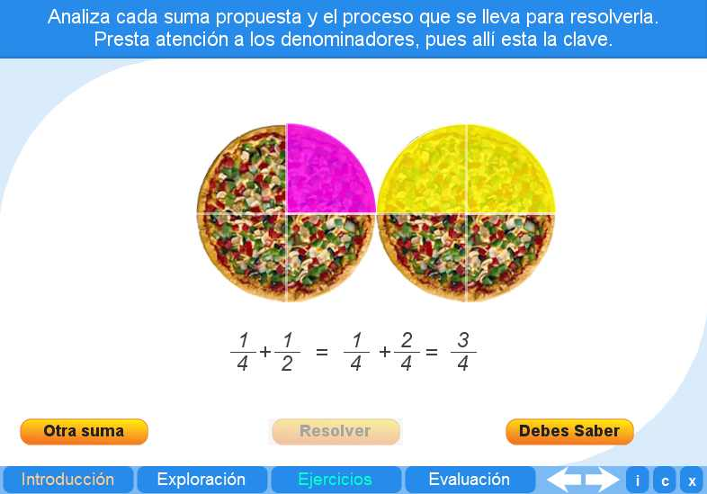
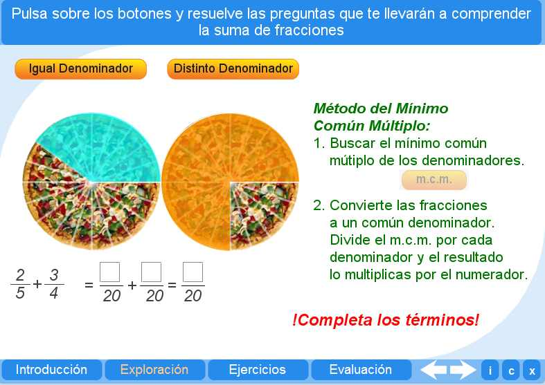
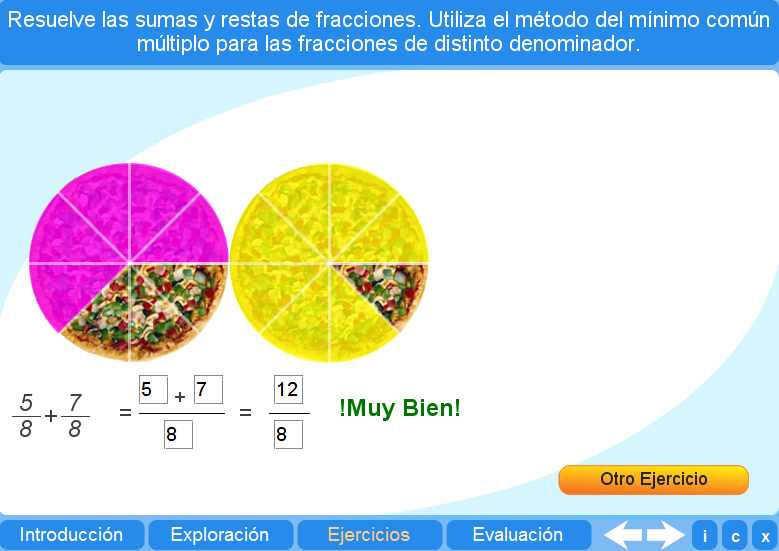
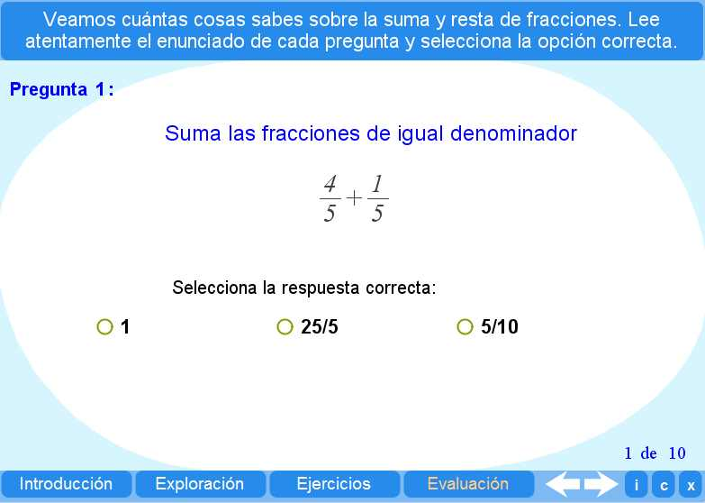

Objetivo
Comprender el procedimiento para sumar fracciones con igual o diferente denominador.
Instrucciones generales
Se puede navegar entre los apartados con el menú de la parte inferior. Este menú aparece a lo largo de todo el objeto de aprendizaje y conserva su funcionalidad.
También se puede navegar por las escenas por medio de las flechas de navegación que aparecen en el lado inferior derecho de la aplicación. Dentro de los apartados Exploración y Ejercicios es necesario utilizar estas flechas para acceder a las escenas sucesivas de dichos apartados.
En la parte inferior derecha de la aplicación se encuentran los siguientes botones:
| Muestra la documentación del objeto de aprendizaje. | |
| Despliega los créditos correspondientes. |
Contenidos
Introducción
Permite un acercamiento al método o procedimiento para realizar la suma de fracciones.

Exploración
Explicación del método del Mínimo Común Múltiplo para sumar fracciones de diferente denominador..

Ejercicio
El alumno puede practicar lo aprendido sobre la suma de fracciones de igual o diferente denominador, a través de ejercicios que presentan valores aleatorios.

Evaluación
El alumno debe resolver los diez problemas planteados, aplicando los conceptos aprendidos en los apartados anteriores.

| Los materiales aquí presentados utilizan DescartesJS | |

|
Los contenidos de esta unidad didáctica están bajo una licencia de Creative Commons. |